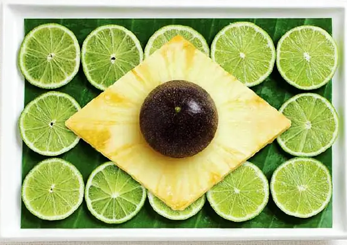

Odin Recipes

Brazilian Typical Foods
Moqueca
- This fish stew is a typical dish from the Northeast Region.
Pamonha
- This recipe is typical dish from the Midwest Region.
Polenta
- This dish is from the South Region culture.